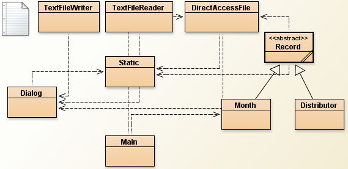
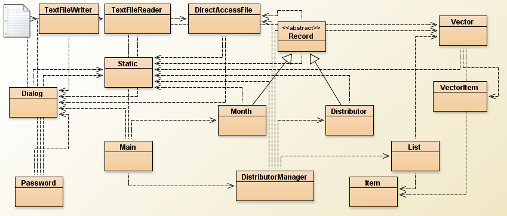
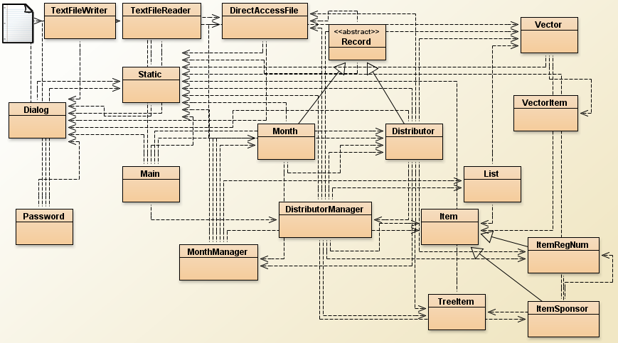
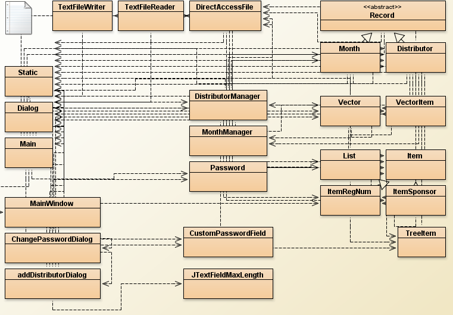
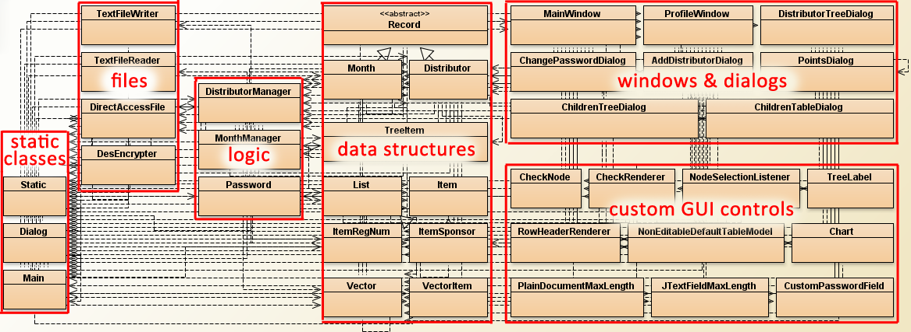

<body bgcolor=black>
<font color=white>
<pre>
 ______  _______ _______ _______ _________ _______ _______ 
(  __  \(  ___  )  ____ \  ____ \\__   __/(  ____ \  ____ )
| (  \  ) (   ) | (    \/ (    \/   ) (   | (    \/ (    )|
| |   ) | |   | | (_____| (_____    | |   | (__   | (____)|
| |   | | |   | |_____  )_____  )   | |   |  __)  |     __)
| |   ) | |   | |     ) |     ) |   | |   | (     | (\ (   
| (__/  ) (___) |\____) |\____) |___) (___| (____/\ ) \ \__
(______/(_______)_______)_______)\_______/(_______//   \__/
                                                           
		Dossier live stream 2.0 by Juraj Masar

	           ~ The Dossier Story ~

About
~~~~~~~~~~~~~~~~~~~~~~~~~~~~~~~~~~~~~~~~~~~~~~~~~~~~~~~~~~~~
Rozmyslam za kolko dni sa da naprogramovat dossier (nie 
napisat, len naprogramovat). Napadlo mi, ze by to mohlo
byt celkom zaujimave pozriet sa na cely priebeh tejto 
dossiero-tvorby neskor; a tak preco z toho nespravit 
taku malu show aj pre ostatnych? 

Tento txt subor budem priebezne update-ovat pocas 
nasledujucich dni tak, aby priebezne ukazoval stav mojho
dossieru. Pokusim sa nic nemazat a vzdy len pridavat. 
Ak mi chcete zanechat komentar, napiste mi na
mail@jurajmasar.com alebo mi napiste na wall na facebooku
http://facebook.com/Jurajmasar

Co je to dossier
~~~~~~~~~~~~~~~~~~~~~~~~~~~~~~~~~~~~~~~~~~~~~~~~~~~~~~~~~~~~
The program dossier is an individual piece of work
completed during the course. The dossier must address
a single problem that can be solved using computer 
systems and which has an identified enduser.

The analysis, design and production of the final system
must be well documented. The emphasis is on the use of 
a logical approach and analytical thinking from definition
and decomposition of the problem through to its solution 
by constructing appropriate classes implementing algorithms
and data structures in the Java programming language.
	  - computer science guide / ib diploma programme -

Ludsky povedane na koniec z toho byva 100-200 stranova 
praca.


Log
~~~~~~~~~~~~~~~~~~~~~~~~~~~~~~~~~~~~~~~~~~~~~~~~~~~~~~~~~~~~
------------------------------------------------------------
22/02/11 17:45
------------------------------------------------------------
pocet riadkov kodu: tak 0
odhadovany pocet dni do dokoncenia: 5
progress (1 znak su 2 percenta):
  0% |                                                  | 

roadmap: ujasnit si strukturu projektu a suborov,
	spravit triedy na low-level pracu so 
	subormi

komentar: najlepsi cas zacat.
------------------------------------------------------------

------------------------------------------------------------
22/02/11 21:50
------------------------------------------------------------
pocet riadkov kodu: ~420
odhadovany pocet dni do dokoncenia: 5 (?)
progress (1 znak su 2 percenta):
  4% |==                                                | 

pocet tried: 4
done: classy na low-level pracu so sekvencnymi a random 
      access subormi 
roadmap: list, nahradit neprakticku hashmapu v praci s RAF
         vlastnym listom a vytvorit objekty pre pracu s 
	 konkretnymi entitami... a viac

komentar: citim sa ako cvicena opica co vie co napise o 10
	  riadkov nizsie. kazdopadne krajsi kod som asi 
	  nikdy doteraz nevyprodukoval; do poctu znakov
	  je tam 2x tolko komentarov ako kodu. ide to, ale 
	  je to celkom nuda.
moralka: prekvapivo vysoka
------------------------------------------------------------

------------------------------------------------------------
23/02/11 15:45
------------------------------------------------------------
pocet riadkov kodu: ~1170
odhadovany pocet dni do dokoncenia: 4 (?)
progress (1 znak su 2 percenta):
  10% |=====                                            | 

pocet tried: 9
total cas straveny programovanim: ~8h
done: tool na pracu s dialogmi, staticke funkcie na pracu
      so stringami, vseobecna entita a triedy pre konkretne
      entity a ich ukladanie na disku
roadmap: thoroughly otestovat ukladanie konkretnych entit
	pridat validaciu na urovni entit pri vkladani
	vlastnosti, dorobit custom featury do entit, 
	spravit classu na managovanie hesla	  

komentar: spal som strasne vela, pocuvam dobru hudbu a 
	chcem uz ten dossier mat za sebou - motivacia 
	je vysoka
moralka: prekvapivo vysoka
struktura projektu: 

------------------------------------------------------------


------------------------------------------------------------
06/03/11 23:15
------------------------------------------------------------
pocet riadkov kodu: kus viac ako ~1170
odhadovany pocet dni do dokoncenia: 4 (??)
progress (1 znak su 2 percenta):
  12% |======                                           | 

pocet tried: kus viac ako 9
total cas straveny programovanim: ~10h

roadmap: 
- upravit listy na viacej rovnakych poloziek
  - findy budu vraciat polia
  - find by position? (position by mala byt unique; JE!)
- spravit find na zaklade roznych kriterii (musi vracat pole, 
    kedze najdenych vzdy moze byt viac)
    - spravit delete na zaklade findu (find, zmazat zo 
      suboru, zmenit pozicie a updateovat konkretne 
      pozicie v listoch)
    - spravit edit na zaklade findu (find a z parametrovych
      informacii ulozit record na najdenu poziciu)
- spravit vratenie pola vsetkych ludi    

MonthManager 
- instancia sa bude vytvarat pre konkretneho distributora!
  (podla toho si do object variable nacita pointer 
  na konkretny subor)
- list podla zmiesaniny 201102
- constructor (vytvori pointer a naplni listy)
- pridavanie (appendujem record a aktualizujem listy)
- vyhladavanie podla listu
    - editovanie (najdem poziciu podla listu, udaje v 
    parametroch zmenim)
    - mazanie ako v DistributorManageri

komentar: zajtra mi zacinaju trialsy, na ktore som nic 
      nevidel (mock final exams). zato som za tento tyzden
      co som nic nespravil v dossieri spravil kopec inych
      uzitocnych veci. poslal do anglicka listy za 10e
      (napr. vybavil tuition fee loan), prihlasil sa
      a spravil <a href="dossier_log_pics/prezentacia.pdf">prezentaciu</a> (2 MB) na tohtorocny
      JuniorInternet, napisal internal na matiku 
      (<a href="dossier_log_pics/internal_zadanie.pdf">zadanie</a> (2 MB),<a href="dossier_log_pics/mathsIA2_pass.pdf">moj internal</a> (7 MB) - heslo: slovo na 
      d......), uspesne absolvoval druhe oralsy 
      zo SJ a tak...a NEucil sa nic na trialsy :-/
moralka: "hori mi pod zadkom" to celkom nevystihuje.
------------------------------------------------------------

------------------------------------------------------------
09/03/11 23:25
------------------------------------------------------------
pocet riadkov kodu: kus viac ako 2796
odhadovany pocet dni do dokoncenia: 4 (??)
progress (1 znak su 2 percenta):
  24% |============                                     | 

pocet tried: 15
total cas straveny programovanim: ~18h

roadmap:
 - spravit editovanie distributora
 - spravit vymazavanie distributora
 - koncepcia MonthManager
 - koncepcia statistik

done:
 - vlastny Vector, ktory prekonava vsetky ocakavania
 - par uber vseobecnych statickych funkcii na pracu s 
   kadecim
 - rozumne a fungujuce vyhladavanie na zaklade troch 
   faktorov v databaze

komentar: 
  uz viem konecny deadline na dossier - 18.3.2011; 
  celkom to motivuje. uplne som sa dnes vykaslal na trialsy
  a robil som cely cas dossier, aspon sa to trochu pohlo.

moralka: ...ved ked robim tak mi to ide od ruky.

struktura projektu: 

------------------------------------------------------------

------------------------------------------------------------
14/03/11 23:47
------------------------------------------------------------
pocet riadkov kodu: 4042
odhadovany pocet dni do dokoncenia: 1
progress (1 znak su 2 percenta):
  48% |========================                        | 

pocet tried: 19
total cas straveny programovanim: ~28h

roadmap:
 - otestovat posledne pridanu featuru - ci je korektne
   vypocitavanie provision
 - spravit cele gui

done:
 - vsetko okrem gui

komentar: 
  zajtra by som to realne mohol dokodit. (optimista) vsetko
  je pripravene na implementaciu gui - na kazdu jednu vec, 
  co sa ma zobrazit existuje funkcia, ktora vrati taku 
  hodnotu... snad to najhorsie je uz davno za nami

moralka: ono to celkom ide, len do piatka to musi byt cele
  napisane; a to uz je ina kava.

struktura projektu: 

------------------------------------------------------------
------------------------------------------------------------
15/03/11 23:54
------------------------------------------------------------
pocet riadkov kodu: 5133
odhadovany pocet dni do dokoncenia: 1
progress (1 znak su 2 percenta):
  72% |====================================            | 

pocet tried: 24
total cas straveny programovanim: ~40h

roadmap:
 - dorobit GUI
 - cele otestovat

done:
 - polovica gui(realisticky) ale treba povedat, ze ta lahsia

komentar: 
ako som vcera napisal, ze vsetko mam okrem GUI je hotove,
tak samozrejme, ze mi rano napadla jedna "jednoducha" vec,
s ktorou som stravil prve dve hodiny programovania dnesneho
dna... :-) kazdopadne od osmej(am) do dvanastej(pm) s 
prestavkou na trening/jedlo/wc. cisty cas asi 12h, napisal
som takych 1100 riadkov, celkom uspech. a hlavne, ze to 
funguje. 

moralka: chcem kruto spat a desim sa pisania zvysnych
obkecov (B,D). okrem toho je vsak ten kod aj program fakt 
pekny, normalne som nan kus hrdy.

struktura projektu: 

------------------------------------------------------------
------------------------------------------------------------
28/03/11 22:05
------------------------------------------------------------
pocet riadkov kodu: 7788
odhadovany pocet dni do dokoncenia: -5
progress (1 znak su 2 percenta):
 150% |================================================|========================= 

pocet tried: 38
total cas straveny programovanim: ~55h

roadmap:
  null

done:
 - dossier doprogramovany, napisany
 - implementovane encryptovanie suborov programu
 - implementovane grafy pomocou JFreeChart kniznice 
   (bez dokumentacie!!!)
 - mutant JTree (strom znamy z Windows Explorera) a 
   Checkboxov, ktory umoznuje oznacenie jednotlivych
   nodov stromu


komentar: 
Dossier bol uspesne odovzdany asi tak tri dni dozadu,
 doprogramovany mozno tyzden dozadu. Log updateujem az
 teraz, pretoze minuly tyzden som kazdu minutu pisania
 venoval prave dossieru a odvtedy som viac-menej spal. 

S programovanim dossieru som zazil este viacero zazitkov.
 Prvu noc dozvukov som stravil programovanim (ale prirodzene
 az vtedy ked ludia sli spat, hlboko v noci), ked som
 prakticky dokoncil vsetky hlavne featury. Potom som to uz
 len odbugoval a pridal encryptovanie suborov a bolo.

Zaujimavostou bolo implementovanie grafov. Pre Javu existuje
 schopna kniznica JFreeChart. Je zverejnena zadarmo s API
 dokumentaciou, avsak kompletna dokumentacia s prikladmi 
(ktora ma vyse 800 stran) zverejnena zadarmo nie je. Preto
 som absolvoval asi 6h urputneho badania, kym sa mi nakoniec
 podarilo sprevadzkovat graf taky, aky som chcel.

Implementacia JTree+Checkbox az taka zla nebola, ale taktiez
 to bol zazitok. Bol smo zvyknuty z Delphi, ze komponenty
 pre GUI vedia vsetko co od nich clovek moze ocakavat
 automaticky, jednoducho si len treba nalistovat 
dokumentaciu a dane vlastnosti pouzit. Avsak Swing je kusok 
iny svet - musel som extendnut JTextField aby som dokazal
 mat v GUI text field s danou maximalnou dlzkou vlozeneho
 vstupu -> nechce sa mi verit, ze vo firmach sa realne robi
 priamo so Swingom. Tusim, ze urcite existuje seria 
nadstavieb/frameworkov/... nad Swingom, s controls ktore 
vedia toho radovo viac ako tie Swingove, mylim sa? Totiz 
myslienka programovania JTextField s obmadzenym maximalnym 
vstupom mi pride absurdna v kontexte toho, ze potrebujem 
programovat samotny program a nie kazdu blbost zvlast.

Co sa tyka pisania dossieru, to uz bolo znacne horsie. 
Pre ludi oboznamenych s kriteriami pre hodnotenie dossierov,
 B2 je svinstvo. Vseobecne pre dossier plati, ze to nie
 je tazke, ale je toho nechutne vela. B2 je toho 
exemplarnym prikladom. (=rozpis vsetkych algoritmov,
 pre/post conditions + pseudokod)

Dossier sa neda napisat za den. To som sice tusil aj predtym,
 ale napriek snahe odhadovat progress pesimisticky to
 prekrocilo moje ocakavania. Zrejme je to fyziologicky dane,
 ze clovek (minimalne ja) dokaze denne napisat maximalne
 4000 slov aby este viac-menej mali hlavu a patu.
 Dlzka mojho finalneho pokecu bola 18 000 slov co spolu s
 kodom davalo 47 000 slov a 362 stran.

Ak by som mal dat odporucanie sam sebe z pred par mesiacov,...
 tak by to asi bolo zacat skor. Vedel som aka je dossier
 "svina" no napriek tomu som cez vianocne prazdniny prakticky
 nic nespravil. <strong>Tyzden programovania dossieru za
 vianocne prazdniny vie usetrit noci nespania pocas tyzdnov
 pred deadlineom. </strong> A teda, ze za posledne dva
 tyzdne som dokopy spal snad najmenej v mojom zivote 
doposial :-)

..
Prijemnym by-productom dossieru je tiez fakt, ze sa mi
 zacala velmi protivit kava a akekolvek energysvinstva,
 pretoze za posledne dva tyzdne toho bolo fakt dost.
..

~~~ PRILOHY ~~~:
- <a href="dossier_log_pics/doc/" target="_blank">Javovska dokumentacia mojho dossieru</a>
- <a href="dossier_log_pics/dossierFINALpass.pdf" target="_blank">moj dossier</a> (format PDF 5,2MB; heslo: slovo na d......) * **
~~~~~~~~~~~~~~~
* nemal by som to zverejnovat minimalne kym (ak) dostanem 
diplom. preto to zverejnujem zasifrovane, pricom sa spolieham
 na fakt, ze cely tento log je napisany po slovensky 
** ak tam najdete chybu akekokolvek charakteru,  
je mi to jedno. prosim, neupozornujte ma na nu, dakujem.
(praca je odovzdana, nic s tym viacej robit nebudem, tak 
naco si drazdit nervy)

finalna struktura projektu: 

------------------------------------------------------------
